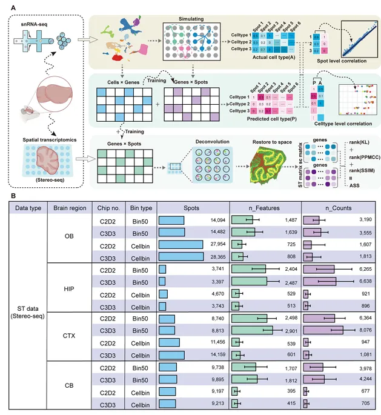
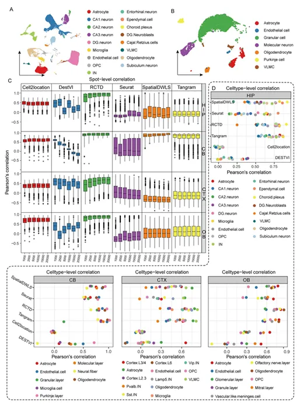
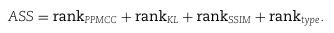
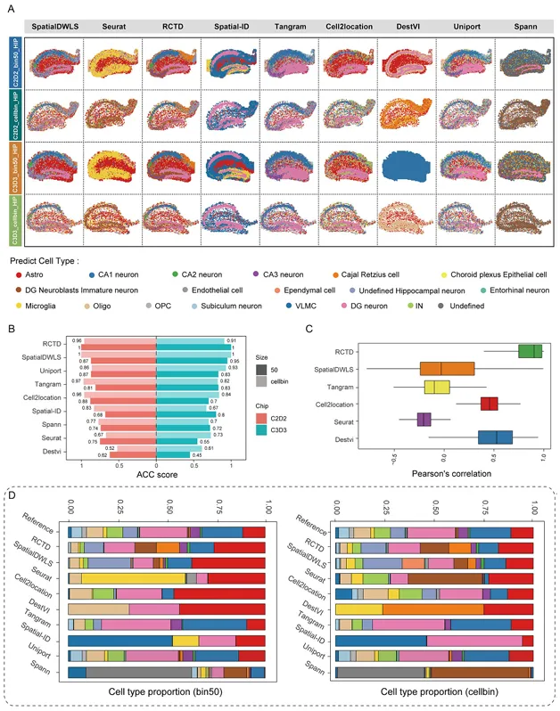
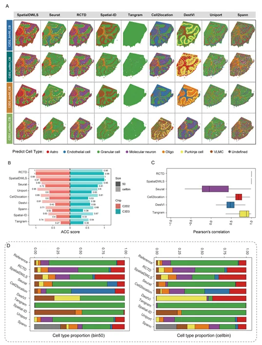

《Brief Bioinform》: 鼠脑单细胞与Stereo-seq数据整合算法评估
原文：https://mp.weixin.qq.com/s?__biz=MzAwMzIzOTk5OQ==&mid=2247529258&idx=1&sn=a3463f650d93ef66419cbb880eb2d10a&chksm=9b3c0a7aac4b836c251a64c7cc297c65f8505aefa150467360c2252282dc3bff421d117addb2#rd 合集：文献速递
一、写在前面
基因捕获效率、分辨率一直是空间转录组细胞类型识别的拦路虎，许多算法能够整合单细胞(single-cell, sc)或单细胞核(single-nuclear, sn)数据与空间转录组数据，从而帮助空转数据的细胞类型注释。此前我们介绍过近年新出炉的Stereo-seq平台，这一新兴技术相关的分析思路及工具支持仍有所欠缺，因此本文的作者评估了9种单细胞数据与stereo-seq空转数据进行mapping的算法，以帮助大家提示stereo-seq数据处理的准确性与效率。原文引用信息：
Tao Q, Xu Y, He Y, Luo T, Li X, Han L. Benchmarking mapping algorithms for cell-type annotating in mouse brain by integrating single-nucleus RNA-seq and Stereo-seq data. Brief Bioinform. 2024 May 23;25(4):bbae250.
如果想系统性的学习空间转录组数据分析也可以看这里：
如果需要数据分析指导 、生信热点全文复现 、自测数据个性化分析 辅导、常态化实验学习，欢迎联系客服微信[Biomamba_zhushou]
二、背景介绍
哺乳动物的脑组织具有极高的异质性以及复杂的细胞类型(神经元、免疫细胞、血管细胞等等)组成，较为传统的技术例如免疫荧光或原位杂交技术无法同一时间内注释出所有细胞类型，因此，脑组织常作为空间转录组想要占领的测试高地：长脑子了!时空转录组揭示大脑再生机制。stereo-seq凭借分辨率高(0.22μm)、视场大(芯片大小可定制)、无需预先设置探针等特点被广泛应用于生命科学研究的各个领域之中。但实战过程中，"cellbin"的划分细胞策略容易遇到体积小的细胞捕获到的分子数量不足、"square bin"划分细胞不能满足单细胞分辨率的尴尬。因此实际分析过程中stereo-seq与其它空间转录组数据一样需要依赖单细胞水平的数据的mapping帮助完成注释过程。目前能够完成这一过程的软件众多：DestVI可以通过基因的"罚分"来完成参考单细胞数据与空转数据的神经网络构建；RCTD利用最大相似度预测各spot的细胞占比(能够减少平台不同带来的影响)；SpatialDWLS本质上利用阻尼加权最小二乘回归，通过整合富集分析以及Giotto提供的差异分析来完成mapping过程；大家熟悉的神包Seurat能够通过最近临近法整合多来源的细胞；Tangram能够梯度优化的计算连哥哥数据集间的KL离散度与余弦相似性；SpatialID利用转化学习训练深度神经网络模型生成各细胞在空转中分布的可能性；SpatialID利用每个数据集的高变基因构建系统模型，输出全局最优的转化矩阵可能性；Spann也能够优化转化模型，使得临近的的样本具有相同的细胞类型。此前也有过空转与单细胞数据整合的工具benchmarking(空间转录组与单细胞转录组整合分析工具大比拼)，但新出现的stereo-seq在之前并没有被纳入考察目标之中，并且这些工具的benckmarking大都依赖高质量的”groudtruth“，而stereo-seq能够使用不同大小的bin size来互相做校验，显然对于这些工具来说也是一个良好的测试数据集。
三、主要结果
如Figure1 A的流程图所示，作者通过已注释的snRNA-seq数据生成了一个拟空间数据作为background，然后收集了八个包含对应脑区位置(例如海马体、小脑、嗅球、皮质等)的snRNA-seq数据与stereo-seq数据。作者主要从square bin 50(大约25μmX25μm)与cell bin(利用ssDNA划分生成的细胞单位)的各算法效果，可以明显看出，Bin50的spot数量要明显小于Cellbin，但nFeature和nCount方面前者更高，换句话说，在这些数据中Bin50的尺寸要大于Cellbin(Biomamba目前处理过的数据也基本都是这个情况)。

Figure 1在完成了四个脑区数据的注释(Figure 2A-B)之后，使用各mapping算法工具处理拟空间数据与stereo-seq空转数据，并对每个spot中细胞比例 进行皮尔森相关系数计算(Figure 2C)，肉眼可见Cell2location(基于Python)与RCTD(基于R)的相关系数又高又稳(这两个包的教程可见：一文搞定空间转录组与单细胞测序的整合分析)。在合并相同细胞类型的表达矩阵后，作者对stereo-seq细胞表达矩阵与snRNA-seq的细胞表达矩阵进行相关性系数分析(Figure 2D)，可以看出RCTD这次遥遥领先，其余软件除了Tangram外表现都很差。
Figure 2接下来作者开始了实战部分，成年脑矢状面脑组织HIP的snRNA-seq与stereo-seq的运行结果如图3A所示，通过作者的生物学知识基础，可以发现RCTD与SpatialDWLS对主要的细胞类型如CA1、CA2、CA3分布的预测较为精准，而其它软件存在边界不清晰、注释不准确的现象。作者引入了ASS来评估细胞距离及相关性，结果显示RCTD(在多个数据集及分bin方法中均表现上乘)与SpatialDWLS表现最优，而Spatial-ID与DestVI垫底(Figure 3B-C)。在注释结果的细胞类型中可见，RCTD与SpatialDWLS能够预测到占比非常小的细胞类型，而DestVI这种仅能够预测到占比比较大的细胞类型。ASS公式如下，感兴趣的同学可以看一下原文了解详细参数含义：


Figure3
在小脑数据的layer的识别上来说，RCTD与SpatialDWLS无论是在cell bin还是在bin50均能够精准的分配出符合其空间位置的细胞类型（Figure 4A），而其它工具都或多或少的丢失了一些layer，例如Cell2location没有识别出Purkinje cell layer。

Figure 4
四、最后聊聊
这篇文章想提供给大家的信息很简单，如果你想用R语言处理stereo-seq，你就用RCTD，如果你想用python处理stereo-seq，你就用SpatialDWLS。值得一提的是，以上的结果都是作者使用脑部数据测试得到的结果，其它的组织器官可能会遇到不同的情况。并且，作为一个benchmarking的文章，作者并没有给出计算效率的评估，要知道，不同算法/工具对于相同输入数据的计算时间可能会相差数千倍。最重要的是作者提出了Accuracy scoring system(ASS)这一概念来评估各工具对空间转录组mapping的效果。本篇文章的代码链接如下，大家可以自行学习体会一番：https://github.com/qyTao185/Benchmarking-Mapping-Algorithms.git 如果你的计算机不足以支持该工具的计算，可按需选用适合自己的计算资源：共享(经济实惠)：有root权限的共享服务器,报我名字立减200￥独享(省电省心)：生信分析不求人
访问链接：https://biomamba.xiyoucloud.net/
更多内容可咨询客服微信[Biomamba_zhushou]

如何联系我们

 留一个领取资料、免费两周学习版服务器的微信号[Biomamba_zhushou]，方便各位随时交流。同时我们也构建了交流群矩阵，欢迎大家入群讨论。
大家可以阅读完这几篇之后添加给生信入门初学者的小贴士
如何搜索公众号过往发布内容
留一个领取资料、免费两周学习版服务器的微信号[Biomamba_zhushou]，方便各位随时交流。同时我们也构建了交流群矩阵，欢迎大家入群讨论。
大家可以阅读完这几篇之后添加给生信入门初学者的小贴士
如何搜索公众号过往发布内容
已有生信基地联系方式的同学无需重复添加

 您点的每个赞和在看，我都认真当成了喜欢
您点的每个赞和在看，我都认真当成了喜欢